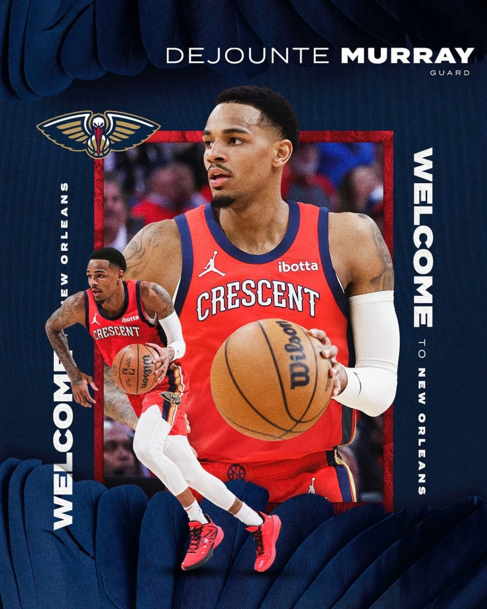
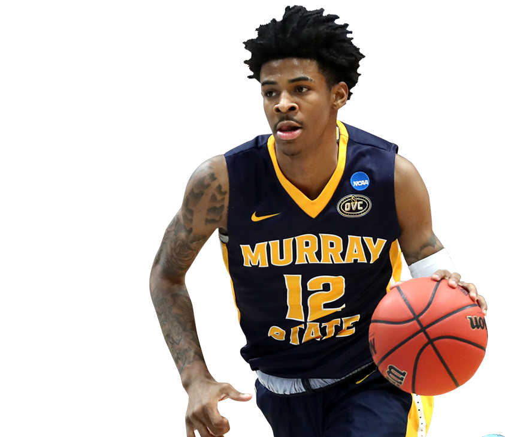
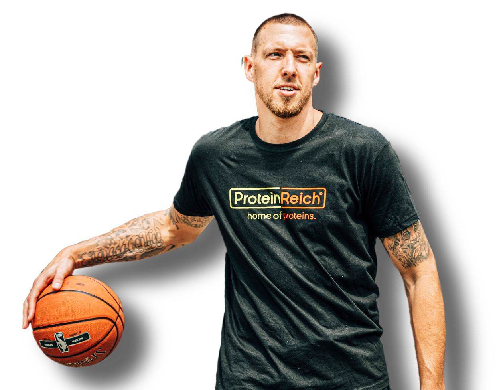
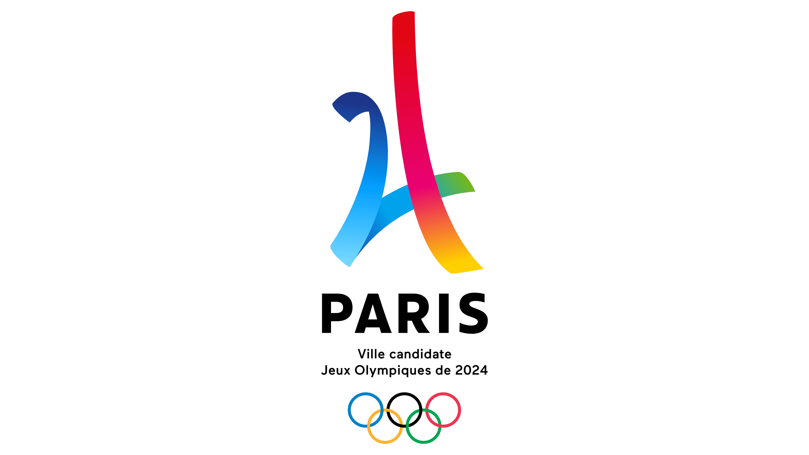
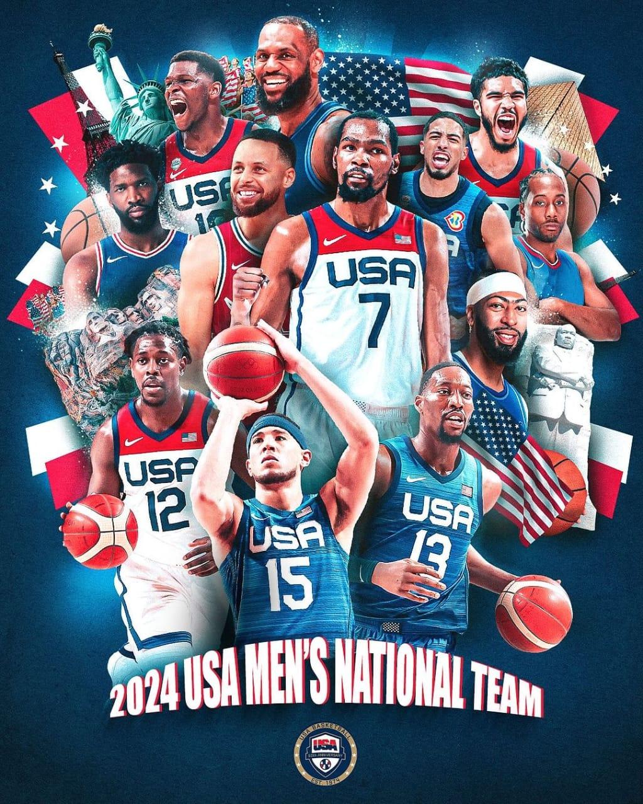
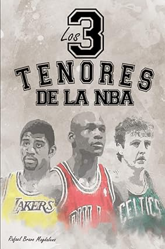
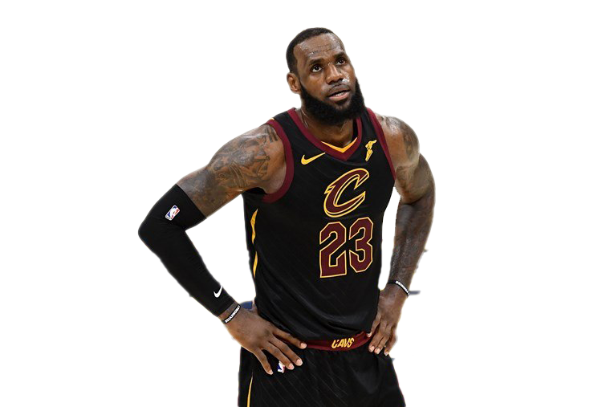

LEBRON JAMES
SE PREPARA PARA PARIS
¡DEJOUNTE MURRAY!
FIRMA NUEVO AÑO CON NEW ORLEANS
Ja Morant ya tiene el alta médica para jugar tras 6 meses de baja
Alta médica para Ja Morant tras estar 6 meses exactos de baja. La estrella de Memphis Grizzlies sufrió una grave lesión en el hombro derecho que le obligó a pasar por el quirófano en enero. Fue la suya una temporada para olvidar.
Pelicans contrata a Daniel Theis tras perder a varios jugadores interiores
New Orleans Pelicans ha contratado en la agencia libre al alemán Daniel Theis, jugador con el que empieza a renovar un juego interior que en recientes fechas ha perdido a Jonas Valanciunas, Larry Nance Jr. y Cody Zeller. La apuesta de Willie Green por el dinamismo de quintetos bajos parece estar haciendo mella en la nómina de jugadores altos de Pelicans, pero más pronto que tarde New Orleans tenía que contratar a algunos interiores, como es el caso de Theis.
España, Puerto Rico, Grecia y Brasil completan el torneo olímpico de París
Finalizaron los preolímpicos de baloncesto que daban las 4 últimas plazas para competir en París 2024, y las 4 selecciones clasificadas para la cita olímpica son España, Puerto Rico, Grecia y Brasil.
Los Nuggets añaden sabor balcánico a su plantel
Los Denver Nuggets han asegurado la presencia de dos jugadores europeos en su plantilla en las últimas horas. Uno es el veterano Dario Saric, que llega desde California tras abandonar los Warriors. El otro es Vlatko Cancar, que ya jugó el año pasado con los de Colorado.
Noticias
NBA Draft 2024: dónde y a qué hora ver el evento de dos noches NBA Draft 2024: dónde y a qué hora ver el evento de dos noches Aquí está todo lo que debes saber del Draft de la NBA de dos noches comenzando el miércoles a las 8 p.m. ET, incluyendo orden de selecciones, prospectos y cómo ver la transmisión por la familia de canales de ESPN.
El pívot de los Celtics, Kristaps Porzingis
Porzingis tendrá una cirugía y se perderá los Juegos Olímpicos El pívot de los Celtics, Kristaps Porzingis, será operado por una rara lesión en la pierna izquierda. No hay una línea de tiempo para su recuperación, pero no jugará con Letonia en los Juegos de París.

WNBA: Wilson y Clark lideran votación anticipada de Juego de Estrellas
USA TEAM PARIS 2024
LIBROS LOS TENORES DE LA NBA
LeBron James: " Bronny es todo lo contrario a mí"
LeBron James, jugador de los Angeles Lakers, concedió una entrevista al periodista de ESPN, Dave McMenamin, en la que repasó temas de actualidad comoel fichaje de su hijo Bronny, la situación del club o las sensaciones a nivel personal. Pese a la juventud, a Bronny "No le importa nadie. Ni siquiera escucha esas cosas. Es el más genial. Es todo lo contrario de su padre. Su padre dirá algo pero a el no le importa. Todo lo que se dice sobre él, realmente no le importa". Dice LeBron.